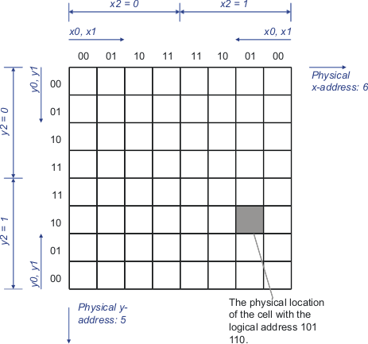

Address scrambling
Address scrambling is the conversion of addresses to account for differences between the logical arrangement of memory cells and their physical arrangement. It is required, for example, to test for effects based on the physical proximity of cells.
To increase the efficiency and performance of memory devices, their internal physical structures often do not match their logical structures. For example, structures may be mirrored or interleaved. The following figure shows a simple example of this sort of architecture:

The address scrambling structure of the previous example can be described with the expressions in the Device architecture file below.
:scramble:
{
:name: "address scrambling"
:table:
{
:format:
{ :bit: :expression: }
{ xa0 "x0 xor x2" }
{ xa1 "x1 xor x2" }
{ ya0 "y0 xor y2" }
{ ya1 "y1 xor y2" }
}
}
The expression above describes the relationship between the logical address (xa0, xa1, ya0 and ya1) and the physical addresses (x0, x1, y0, y1 and y2).
Functional changes
- Introduced before SmarTest 6.3.2